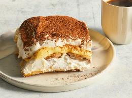

Home
Tiramisu

Description
This delicious tiramisu made with homemade mascarpone custard (no raw
eggs), layers of whipped cream, and rum and coffee-soaked ladyfingers is
an impressive Italian dessert. Dust the top of the tiramisu with cocoa
powder before serving.
Tiramisu, with its irresistible coffee flavor and lightly sweetened
mascarpone, will never go out of style. This tiramisu recipe is a no-bake
dessert that's sure to impress even the pickiest of eaters.
Ingredients
- Egg yolks
- Sugar
- Milk
- Cream
- Vanilla
- Mascarpone
- Coffe
- Rum
- Ladyfingers
- Cocoa powder
Steps
-
Cook the egg yolks, sugar, and milk until slightly thickened. Let cool
slightly, then chill in the fridge for about an hour. When the filling
has fully chilled, mix in mascarpone cheese.
- Beat heavy cream with vanilla extract until stiff peaks form.
-
Combine coffee and rum in a small bowl. Pour mixture over ladyfingers
that have been split in half lengthwise.
-
Line the bottom of a baking dish with soaked ladyfingers. Spread half of
the mascarpone mixture over the ladyfingers, then half of the whipped
cream over that. Repeat in the same order. Dust with cocoa powder.